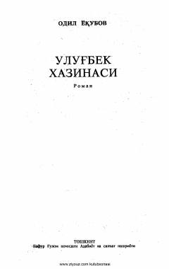

UXBuyuk olim va hukmdor Mirzo Ulug'bekning hayoti va fojiali taqdiriga bag'ishlangan tarixiy roman.
Mazkur roman buyuk olim va hukmdor Mirzo Ulug'bekning hayoti va fojiali taqdiri haqida hikoya qiladi. Asarda XV asr Movarounnahridagi siyosiy kurashlar, ilm-fan rivoji va Ulug'bekning o'z o'g'li Abdullatif bilan bo'lgan murakkab munosabatlari badiiy talqin etilgan.